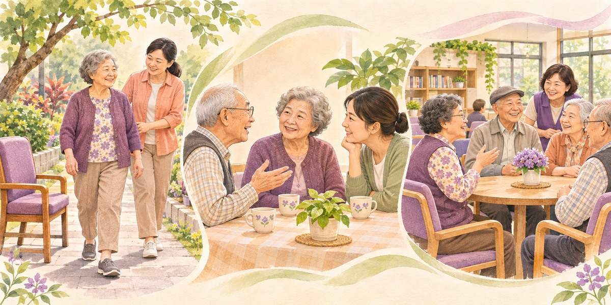

從做得到的小事開始，尊重每個人的能力與感受。以下是一般衛教資訊，個別診斷、用藥與復健安排請洽醫療團隊。

記憶改變，先評估
巴金森會影響動作，也可能影響思考，但不是每位病友都會失智。失智也不是正常老化；若記憶、判斷或日常生活能力出現改變，請就醫評估，不要只當作年紀大了。
安全活動，依能力慢慢來
① 安全動一動：選擇做得到的溫和活動，例如散步或經評估適合的太極。先暖身，動作慢慢來；需要時扶穩固支撐或有人陪同。活動不能取代藥物，也不能保證逆轉失智或治癒巴金森。
把居家防跌做在前面
② 防跌從家裡開始：清出走道上的電線與雜物，保持足夠照明，穿合腳穩固的鞋。若曾跌倒、走路不穩或常頭暈，請告訴醫療團隊，一起找原因與調整活動。
延伸閱讀與來源
用耐心讓溝通容易一點
③ 陪伴多一點耐心：一次說一件事、問一個問題，用短句慢慢說，再留時間等回答。聽不懂就換個說法，不急著糾正或爭辯；先理解長輩的感受，讓對話有耐心也有尊重。
用藥變化，先聯絡醫療團隊
藥物依原醫囑使用，不自行減量、停藥或改時間。若出現嗜睡、頭暈、混亂或其他不舒服，記下發生時段與正在用的藥，聯絡醫療團隊評估。
延伸閱讀與來源
照顧自己，也照顧陪伴者
今天選一件做得到的小事，也照顧一下陪伴者的需要。
有照顧需求時，可向醫療團隊或所在地長照服務窗口詢問，依個別需要評估合適的協助。
延伸閱讀與來源
一起參與聰動
了解課程、會員服務與12/5活動；休息時可坐穩欣賞五支擬真風景導覽。AERO Explorer依地形／衛星影像合成的導覽，並非實拍空拍。